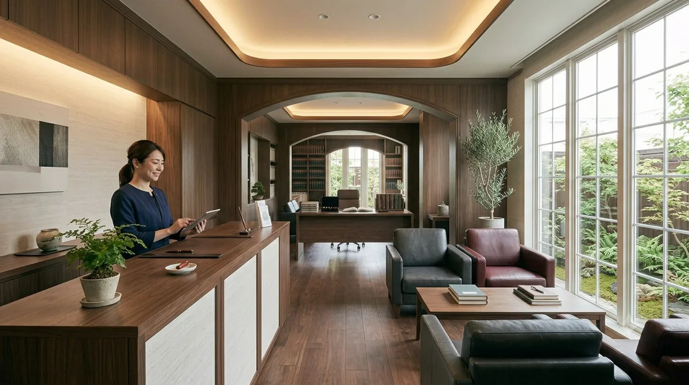
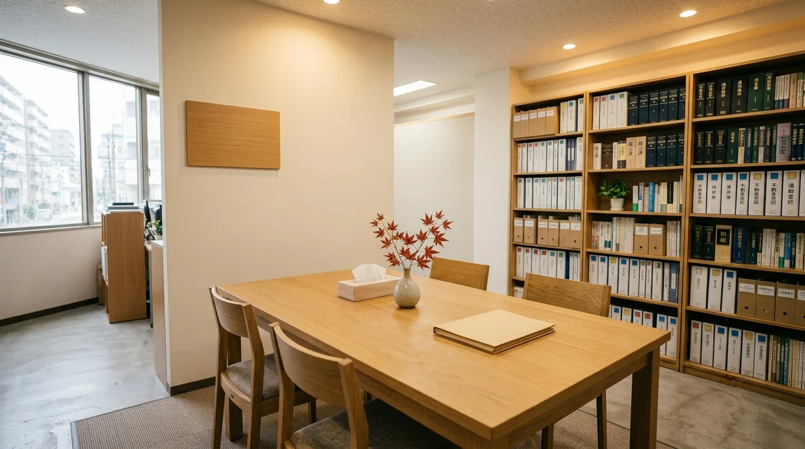

票 06 事務所
司法書士紹介・事務所案内OUR OFFICE — SHEET 06 / 10
四人で、
最後までお付き合いします。
司法書士2名・事務2名の小さな事務所です。ご相談をうかがった者が、書類の作成から完了のご報告までお付き合いします。お引き受けできることと、他の士業にお願いすることも、最初にお伝えします。

事務所について
About相続・不動産登記を専門に15年。手続きは、どれも一生に何度もあるものではありません。だからこそ、書類の名前ではなく「何のための書類か」からご説明します。初回のご相談は無料です。
-
一、
ご相談を受けた者が、最後までお付き合いします
司法書士2名・事務2名の小さな事務所です。担当が途中で変わることのないようにしています。
-
二、
まず、期限がどこにあるかを確かめます
お話をうかがったら、いちばん先に「いつまでに何をするか」を一緒に確かめます。急ぐものと、急がなくてよいものを分けるところから始めます。
-
三、
時間のかかるところは、こちらでお引き受けします
戸籍の取り寄せなど、集めるのに時間がかかる書類はこちらで手配できます（別途、実費がかかります）。
-
四、
できることと、できないことを先にお伝えします
司法書士がお引き受けできるのは、登記と、裁判所・法務局に出す書類の作成が中心です。税や交渉が関わる場面では、提携の税理士・弁護士をご紹介します。
附記初回のご相談は無料です。30〜60分程度、「これは手続きが必要なのか」という段階から承ります。
票10相続の進め方を見る司法書士とスタッフ
People司法書士2名と、事務2名。ご相談の内容にあわせて、どちらの司法書士がうかがうかをお知らせします。

01 — REPRESENTATIVE
田中 誠一たなか せいいち ／ 代表
司法書士（福岡県司法書士会）
簡裁訴訟代理等関係業務認定
手続きの意味がわかると、決めるのが楽になります。
02 — SHIHO-SHOSHI
中村 美咲なかむら みさき ／ 司法書士
司法書士（福岡県司法書士会）
書類の名前ではなく、何のための書類かからご説明します。
03 — ASSISTANT
森 健太もり けんた ／ 事務・補助者
戸籍・住民票の取り寄せ、書類の手配
戸籍の取り寄せなど、時間のかかるところを引き受けます。
※ このほかに事務1名がおります。「補助者」は司法書士事務所で書類の手配などを担当する者の呼び名です。
※ 写真・氏名はサンプルです。実在の人物ではありません。
事務所概要
Summary| 項目 | 内容 |
|---|---|
| 名称 | 田中司法書士事務所 |
| 代表 | 田中 誠一（司法書士） |
| 所在地 | 福岡県福岡市〇〇区〇〇4-5-2 |
| 受付時間 | 9:00〜18:00／土日祝は要予約 |
| 開業 | 2011年4月 |
| 所属会 | 福岡県司法書士会 第〇〇〇〇号 |
| 認定 | 簡裁訴訟代理等関係業務 認定第〇〇〇〇〇〇号（法務大臣認定） |
| 人員 | 司法書士2名／事務2名（補助者を含む） |
| 取扱業務 | 相続手続き／不動産登記／商業・法人登記／遺言書作成／成年後見／登記のご相談 |
| 面談の方法 | 事務所での面談／ご自宅・病院・施設へのご訪問（福岡市内および近郊）／オンライン面談 |
| 連絡先 | info@example.com／LINE／お問い合わせフォーム |
※ これはRESCが作成したサンプルサイトのため、登録番号は伏せて表記しています。
※ お電話でのご相談は承っていません。メール・LINE・フォームからお願いします。
お引き受けできる業務の範囲
Scope of Work司法書士がお引き受けできるのは、登記の申請と、裁判所・法務局に出す書類の作成、成年後見に関する手続きが中心です。税の計算や、話し合いがまとまらないときの交渉は、それぞれ税理士・弁護士の仕事になります。下の図と表は、その境目をまとめたものです。
◀ 図は横に送れます ▶
FIG. 01 — SCOPE OF WORK上の図は業務の分かれ目を示すものです
- 中央の枠司法書士がお引き受けできる範囲です。簡裁訴訟代理等関係業務は、法務大臣の認定を受けた司法書士が扱えるものです。
- 朱の枠他の士業の分野です。ご相談の中で必要になったときは、提携先をご紹介します。ご紹介にあたって費用をいただくことはありません。
- 境目のことひとつのご相談の中に、司法書士の分野と他の士業の分野が混ざっていることがよくあります。どこまでをこちらでお引き受けするかは、最初にお伝えします。
| ご相談の内容 | 担当するのは | 当事務所の対応 |
|---|---|---|
| 登記の申請相続・売買・贈与・抵当権抹消・会社の登記など。 | 司法書士 | お引き受けします |
| 裁判所・法務局に出す書類の作成相続放棄の申述書、成年後見の申立書など。 | 司法書士 | お引き受けします |
| 成年後見に関する手続きご本人の状況をうかがったうえでご案内します。 | 司法書士 | お引き受けします |
| 相続税・贈与税の申告、準確定申告税額の計算や、税についてのご相談を含みます。 | 税理士 | 期限のご案内までを承ります。申告は提携の税理士をご紹介します |
| 話し合いがまとまらないときの交渉・調停・訴訟相続人の間で意見が分かれている場合など。 | 弁護士 | 提携の弁護士をご紹介します |
| 測量・分筆・地目変更などの登記土地の形や種類そのものを登記する手続きです。 | 土地家屋調査士 | 土地家屋調査士をご紹介します |
| 社会保険・年金の手続き | 社会保険労務士 | 必要に応じて、他の士業をご紹介します |
| 不動産の売却の仲介・価格の査定 | 宅地建物取引業者 | 売却をお考えの場合は、不動産会社をご紹介します |
※ 登記と、裁判所・法務局に出す書類の作成を中心に、他の士業と連携してお手伝いします。
※ 税に関する期限（準確定申告4ヶ月・相続税の申告10ヶ月）のご案内はできますが、申告の内容や税額のご相談はお受けできません。
相談の受け方
How We Meetご来所のほか、ご自宅・病院・施設へうかがう方法と、オンラインでの面談があります。ご移動が難しい場合や、ご家族が遠方にいらっしゃる場合にお使いください。
| 方法 | 場所・やり方 | ご予約 |
|---|---|---|
| 事務所での面談 | 福岡県福岡市〇〇区〇〇4-5-2。書類を広げてお話しできる相談室でうかがいます。 | 事前にご連絡いただけると、相談室を空けてお待ちします |
| ご訪問 | ご自宅・病院・施設へうかがいます（福岡市内および近郊）。ご移動が難しい場合にご利用ください。 | 要予約 |
| オンライン面談 | ビデオ通話で承ります。ご予約のときに、つなぐためのURLをお送りします。 | 要予約 |
| 土日祝・受付時間外 | 受付は平日 9:00〜18:00 です。それ以外の時間も、あらかじめご連絡いただければ調整します。 | 要予約 |
※ 初回のご相談は無料です（30〜60分程度）。お手元に書類があればそのままお持ちください。無くても構いません。
※ ご本人がお越しになれない場合、ご家族だけのご相談も承ります（相続・成年後見とも）。手続きの内容によってはご本人の確認が必要になることがありますので、その場合は方法をご一緒に考えます。
事務所の様子
Roomsお越しいただいたときの様子です。入口を入ってすぐが受付、その奥が相談室になっています。


※ 相談室は仕切られた部屋です。ほかのお客様と顔を合わせずにお話しいただけます。
初回のご相談は無料です
「これは手続きが必要なのか」という段階でも構いません。期限が近いかもしれない、というご相談も、まずは状況をうかがわせてください。メール・LINE・フォームからお問い合わせいただけます。受付は 9:00〜18:00、土日祝は要予約です。